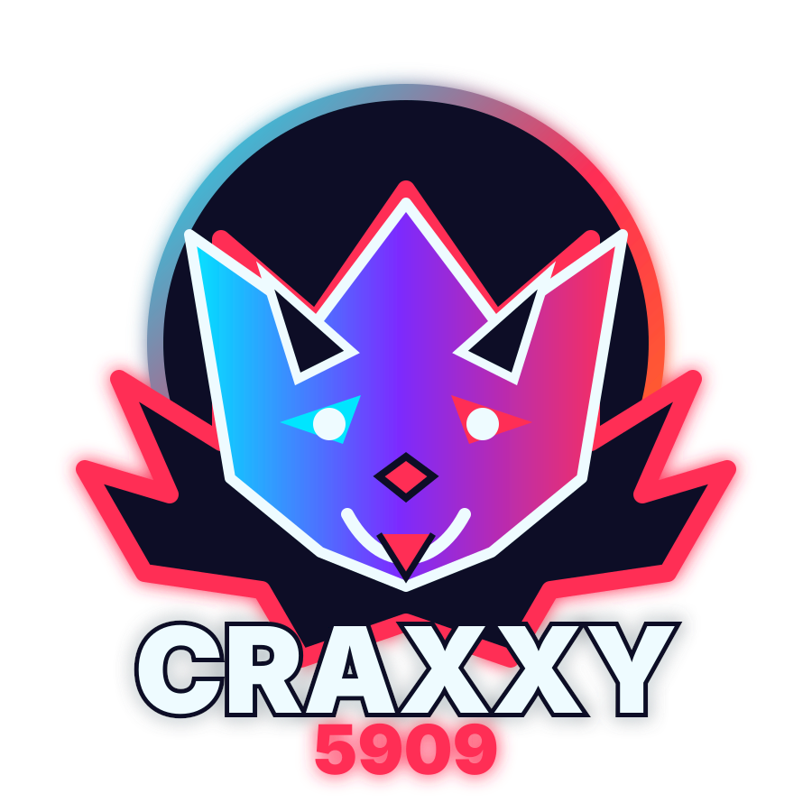

Live system
Dashboard bento, orbs interactifs et commandes instantanées.
Une interface pensée comme un cockpit personnel : liens rapides, statut PWA, raccourcis clavier et micro-interactions néon.
0 pages0 fps0% vanilla
Workspace glassmorphism, orbs interactifs, outils réseau, chat, streaming, mini-jeux et lab créatif — en HTML/CSS/JS vanilla.
Une interface pensée comme un cockpit personnel : liens rapides, statut PWA, raccourcis clavier et micro-interactions néon.

Service worker, manifest, offline fallback et install prompt.
Messagerie locale premium avec bulles glass, sauvegarde navigateur et mode focus.
◎IP publique, device, UA, latence et diagnostics.
▶Redirection directe vers pursteam.wiki.
◈Plus ou Moins, Memory, Réflexes, Snake et Aim Trainer.
▧Génère des fonds abstraits dans l'esprit de ton image : vagues cyan, rouge et orange sur noir profond.
◌Prototype créatif d'échange via Web Audio.